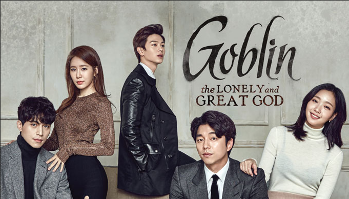

Nancy enjoys watching K-dramas. She loves romance shows, especially the ones that make her cry. She has a habit of binge-watching and rewatching her favorite K-dramas.
Nancy's Likes


Nancy enjoys watching K-dramas. She loves romance shows, especially the ones that make her cry. She has a habit of binge-watching and rewatching her favorite K-dramas.